MIKE THE MIC / VERSION 03 / 27 SEPTEMBER 2026THE NIGHT SHIFT
Ten distinct encounters replace the repeated bays. Climb, ride the service lift, time the presses and find all 56 salvage items.
56salvage finds
10different new bays
3tool-based repairs
7short voice clips
The ordinary-input test completes the level in 4:07, using authored route knowledge and predicted jumps. This proves completion, not human difficulty. All 134 platforms pass geometry checks. The boss is repairable with zero salvage. Hold Down/S (or the touch down button) to look below. Local desktop frame-work p95: 2.3 ms.
The new version
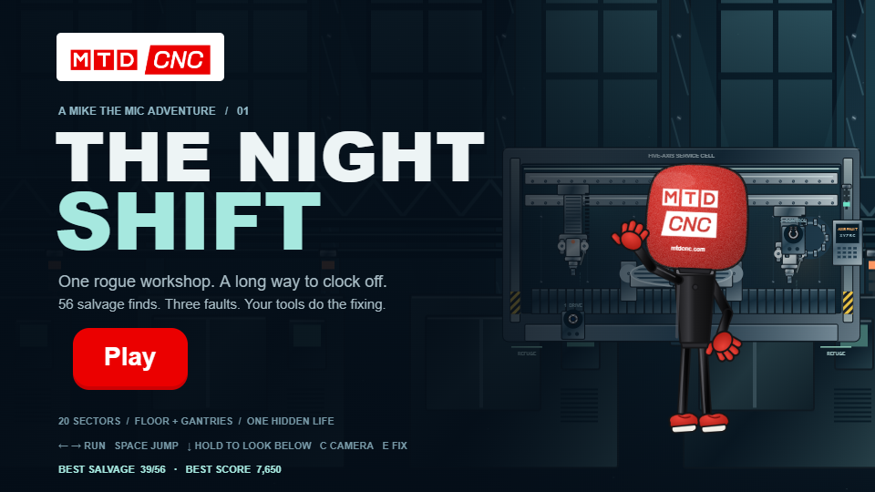
The Night Shift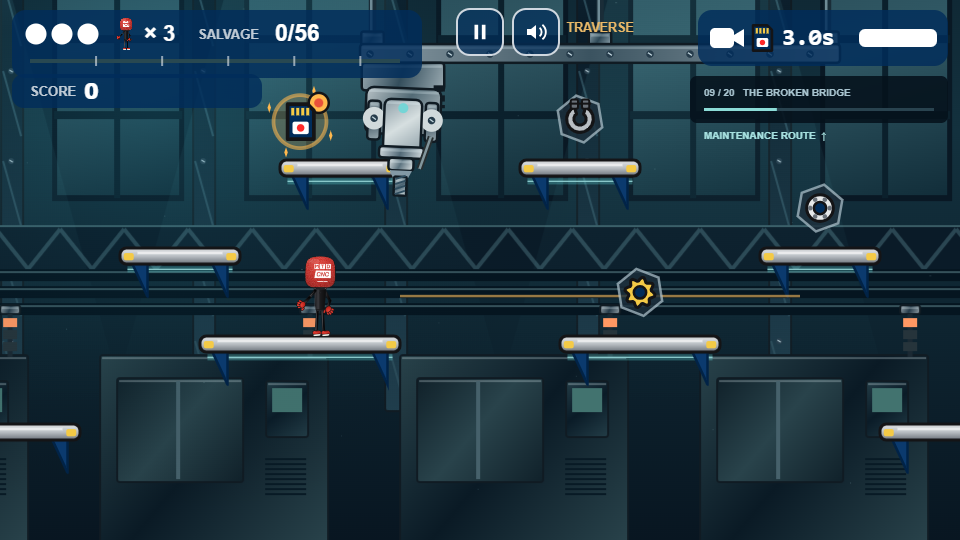
The broken bridge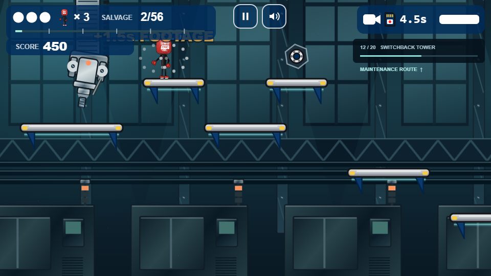
Switchback tower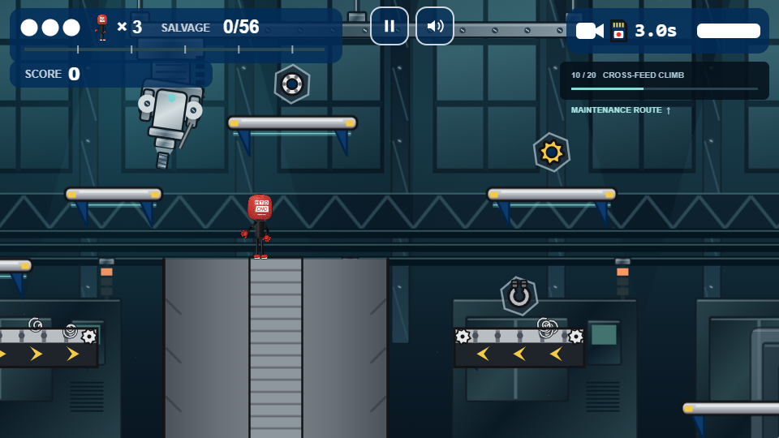
Cross-feed climb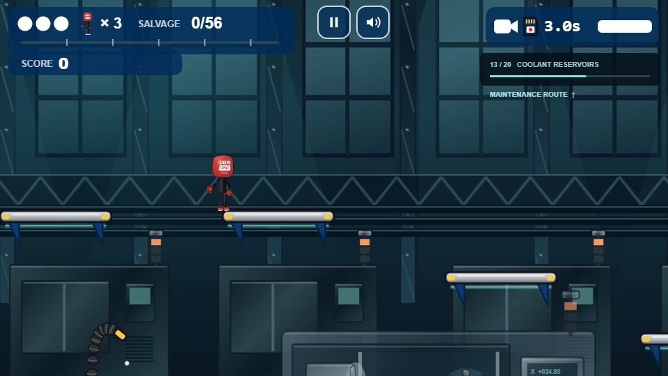
Coolant reservoirs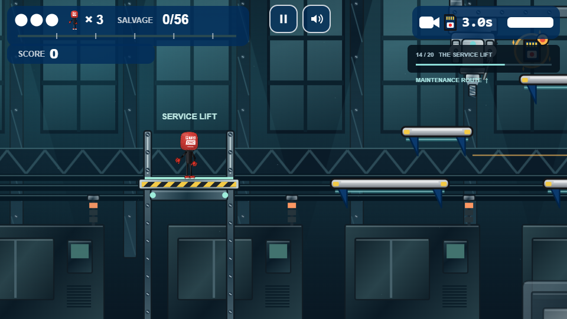
The moving service lift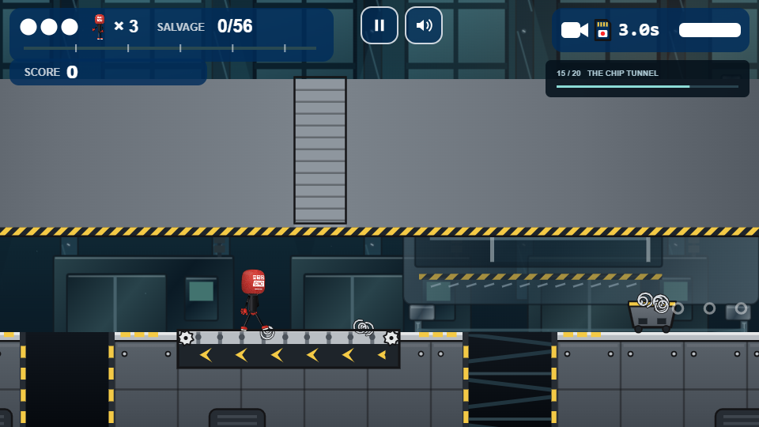
The chip tunnel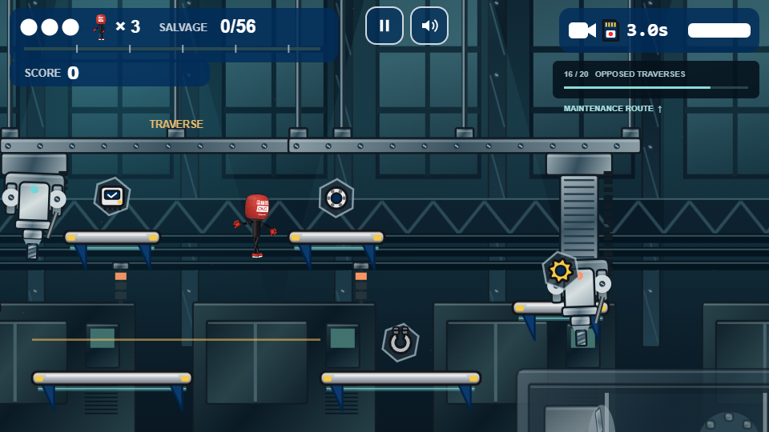
Opposed traverses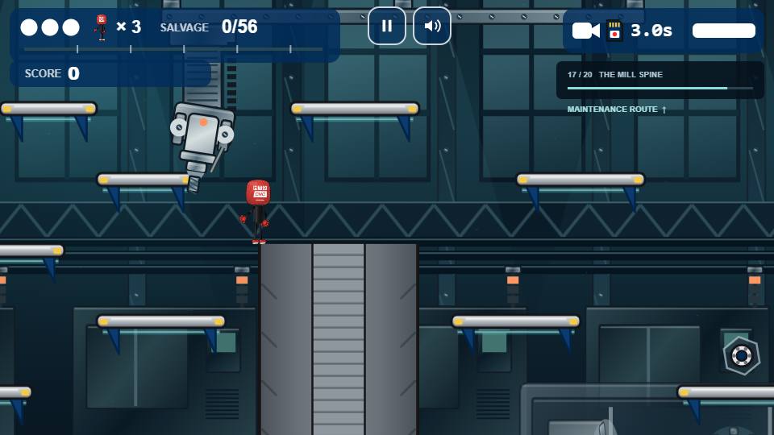
The mill spine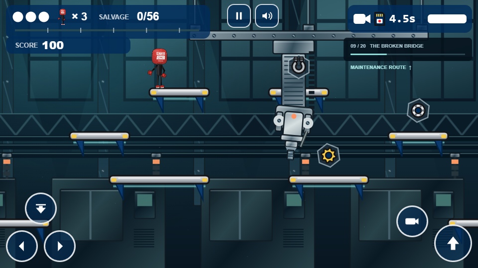
Hold Down / S to inspect the landing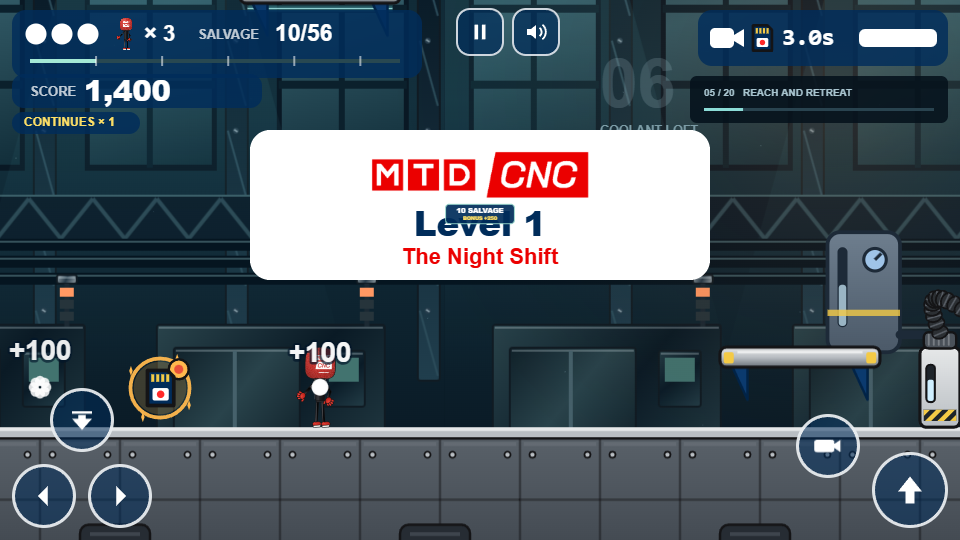
Three service points and the centre refuge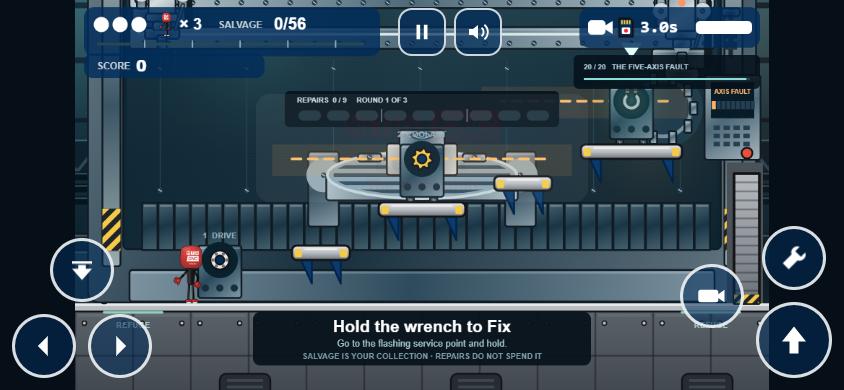
Phone controls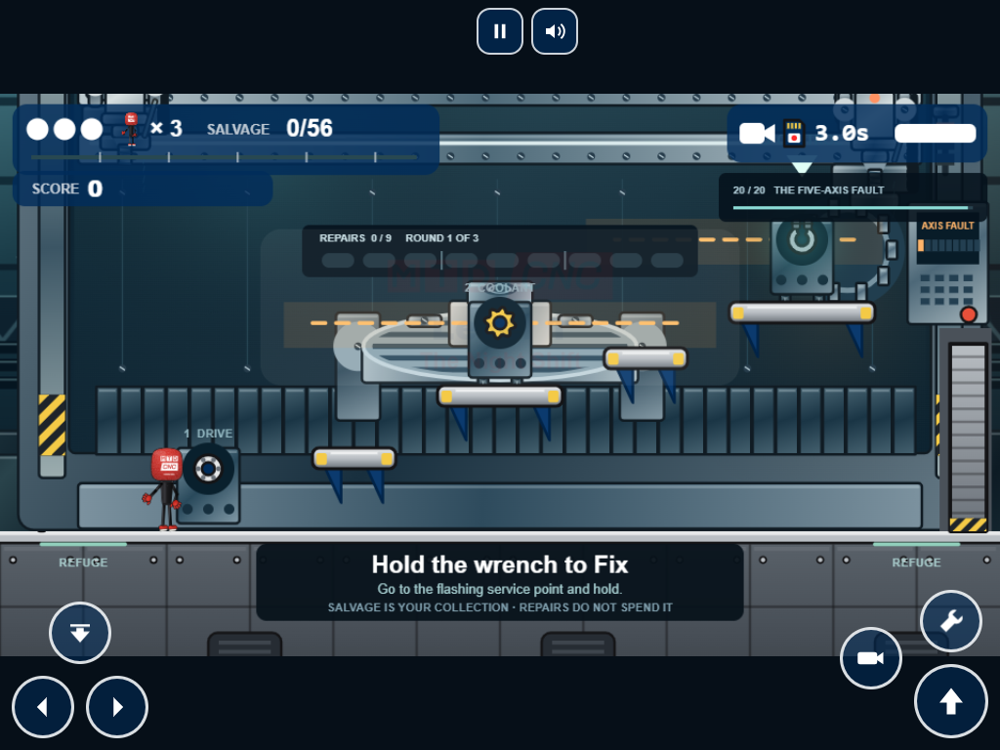
iPad framing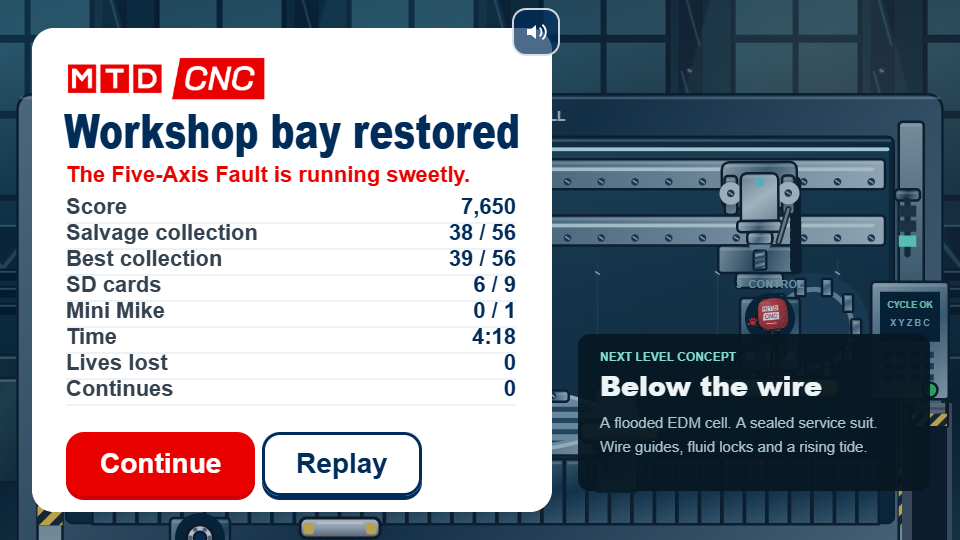
Actual full traversal resultBoss: before / after
 Original
Original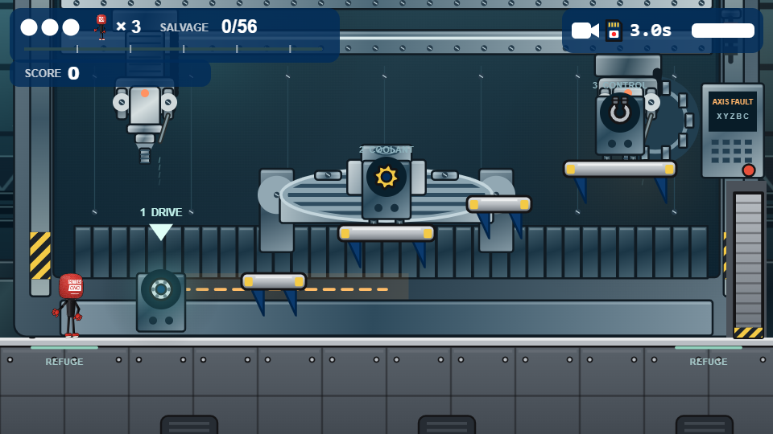
Night ShiftThe routes
Five strips cover all 960 tiles. Long floor gaps and solid beds require height changes; upper branches add collection routes. The overview deliberately omits pickup and secret locations.

Mike's voice
The exact saved Gemini voice used in the explainer video: voice_h0dygekvdjzv, directed with urgency and energy. Only the seven approved lines, with no in-game subtitles. Audition the delivery here.
Ow! Pack it in!
pain-1 · 2.1sFlipping Heck
pain-3 · 1.1sRight then. Let's get this lot sorted.
boss · 2.2sNext: Below the Wire
A proposed wire EDM level: a sealed service suit, flooded cutting chamber, dry overhead route, pump-controlled fluid levels and moving wire guides. The design review includes the playable prototype scope and two further level candidates.
LOCAL REVIEW BUILD · NOT DEPLOYED · SUPPLIED MIKE ARTWORK PRESERVED